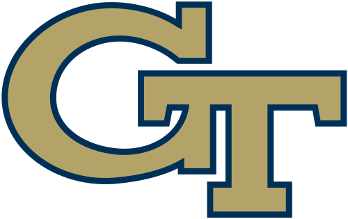
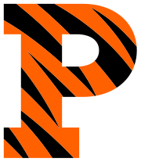

About Me
Education
In December 2024, I completed my most recent degree with a Masters in Science in Computer Science from Georgia Tech. I started the program in Fall 2022 and my concentration was in Computing systems. Over the course of the program, I took classes in topics ranging from Artifical Intelligence for Robotics to Machine Learning for Trading . I was able to take various other classes to help build my foundational knowledge in topics ranging from Computer Networks to Database Systems to Information Security . With my concentration, I also had the opportunity to take a class focused entirely on development and analysis of Algorithms .
I truly enjoyed the program and completed my journey with a 4.0 GPA. While many of the courses were in Python, I had the opportunity also program with Java, C++, C, and SQL.

For my undergraduate education, I studied Mechanical and Aerospace Engineering at Princeton University. In addition to my major, I had two certificates in Applications of Computing (Computer Science) and Robotics & Intelligent Systems. Note: at Princeton, a certificate is the equivalent of a minor.
Through my undergraduate education, the two first classes in Computer Science were taught in Java. The third class was foundationally in C (with some fun assembly language tossed in there) with the remainder classes primarily in Java or Python. Through engineering labs, I was introduced to Python. Since my first introduction to how user-friendly Python programming can be, the Python language has been my go-to for personal projects that I want to immediately get up and running!
Personal Life
Since 2021, I have lived in South Jersey. I am always taking on a new project such as learning how to program in Swift to develop an app or creating a lightsaber that changes color based on how my stock portfolio is currently performing. I love learning, problem solving, and developing elegant and clean solutions to messy problems.